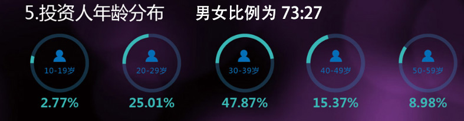
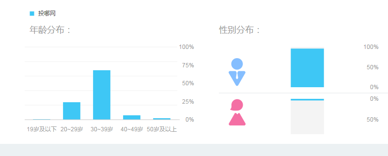
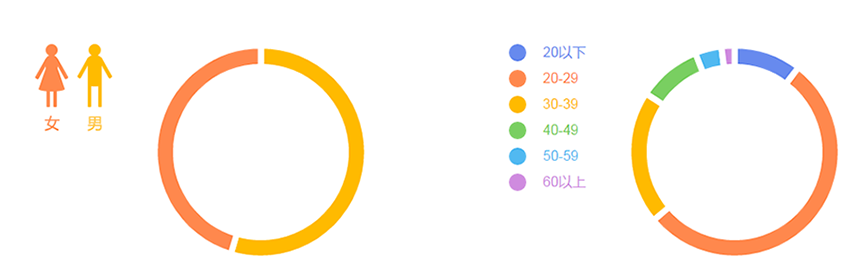
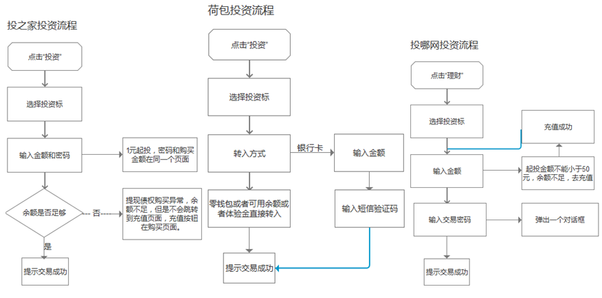
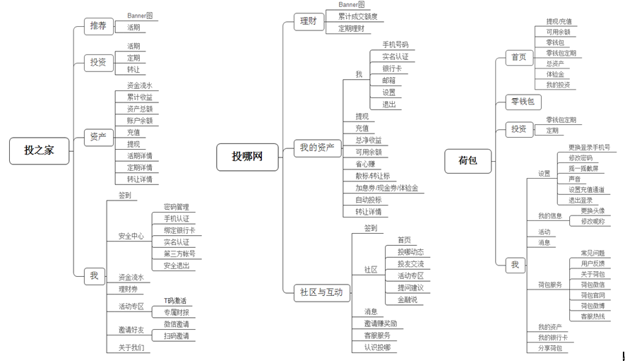
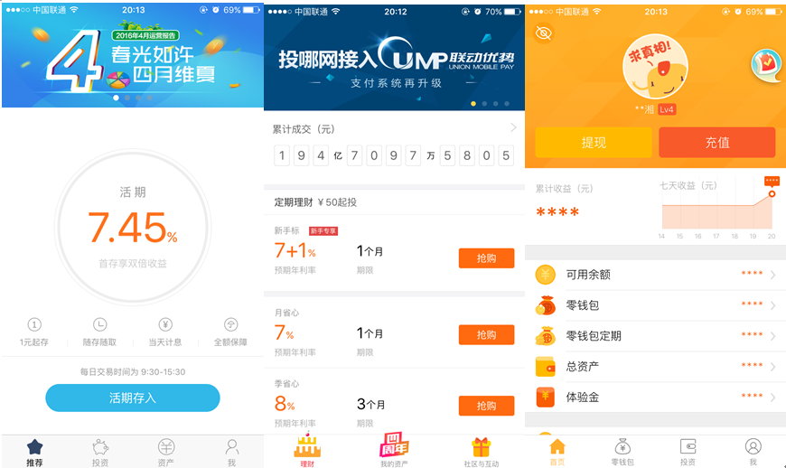

互联网金融分析
P2P总体是一个大市场，下面就我本人投资过的一些平台。那些大平台不在我的考虑范围之内，一是利率低，二是业务复杂，用户体验不是很好。互联网金融产品很复杂，像债权端产品就有很多类，每一类里面的门道很多，更不用说资金端的金融产品了。这个分析主要是从平台背景、用户人群、投资流程，APP框架、交互、总结等做一个简单的分析报告。这个分析都是针对移动APP的，有的平台Web端和APP端业务不完全相同，有的还没有PC端业务，比如荷包只做APP端理财。
1.平台背景：
|
投之家 |
投哪网 |
荷包 |
| 利率 |
7.5%—9.5% |
6%-12% |
8%-13.88% |
| 产品类型 |
7.5%活期+1-3个月的定期 |
一个月、一个季度、半年和全年的定期 |
10.88%的活期+12.88%28天定期和58天13.88%的定期 |
| 资产 |
各种理财一级市场资产 |
车贷、楼款、消费贷、供应链 |
小微金融债权，企业贷、物业贷 |
| 成交量 |
60亿 |
174.9亿 |
205亿 |
| 用户数 |
190万 |
307万 |
403万 |
| 业务模式 |
资产配置平台 |
债权销售平台 |
债权销售平台 |
| 资金托管 |
无托管 |
无托管 |
无托管 |
| 本息保证 |
二级市场提供100%提供本息保证 |
100%提供本息保证 |
100%提供本息保证 |
| 交易透明度 |
交易不透明，投资者不知道具体资金去向 |
需要投资完成后才能看到相关的合同和详细信息 |
58天的定期交易透明，能看见每笔债权的详细合同 |
| 风险备用金 |
1100万 |
3746万 |
官方宣称上千万备用金但具体不明 |
| 注册资金 |
500万 |
5000万 |
1亿 |
以上数据全部来来源于各平台官网
投之家：优势是得益于网贷之家的风控，从多家平台购买债权，之后打包组合成债权给用户购买，尽量分散投资，降低风险。不管是利率或者安全度，都还不错。劣势是，注册资本比较少，平台的营销还有待加强。还有打包组合的债权资金去向不明，对于新手的安全感弱。最后二级市场容量有限，急需其他的业务来补充。
投哪网：优势是品牌知名度很高，创始人都是一流学府金融硕士的学历背景，资产端业务多元化发展。劣势是利率比较低，债权这边的用户体验做得不是很很好，比如APP里面关于标的本息保证都没体现出来，APP的交互设计有很大的改善空间。
荷包金融：优势是注册资本最高，利率也最高的，交互设计是这三个平台做得最好的，用户活跃度很高。劣势是没有PC端理财，虽然是移动互联网时代，但是PC端也不能放弃，再则是备用金不明，投资人不在现有公司运营团队里，这些因素也都会影响用户投资决策。
2.用户分析：
投之家

投哪网

荷包

投之家：主力用户在30-39岁之间，20-29岁用户占比第二，但是男女比例差距较大，主要为男性投资者。如何吸引女性投资以及增加年轻用户占比成为他们下一步重点，不管是客户端UI设计，还是交互设计，投之家都在快速提高。
这张图我是从百度指数上面截下来的，投哪网季度报告居然没有用户详细数据，只有用户总人数这一项数据！强烈建议每个平台做月度报告，不仅对自身平台的运营数据支持，而且对于投资人也更能了解平台。与我之前猜的差不多，30-39岁占比高达70%！所以吸引年轻投资用户成为重中之重，首先第一步改改客户端UI设计和交互设计。
荷包金融的主力用户在20-29岁之间，男女比例也是1:1，表明荷包金融主要吸引的是年轻的用户，从客户端就能感受到一股浓浓的年轻气息，荷包金融要，但是在金融本质的风控、品牌上需加强，即扩大知名度和平台安全保障。
3.投资、提现流程

提现流程和充值流程差不多。投之家的投资过程是先选择投资，然后选择投资标，最后选择输入金额和密码，密码和输入金额在一个页面，一步到位，这种方式的体验蛮好的。但有一个问题交易密码容易忘记，如果交易密码能设计成六位数字的交互方式就好了。个人最喜欢荷包这种通过手机验证码来投资，因为现在很多，而且交易密码和登录密码不能相同，
投哪网的投资流程是最复杂的，当输入金额点击下一步的时候会弹出一个小的密码窗口，有点像PC页面弹窗遮罩效果，这种交互方式在PC端体验不错，但是手机端因为屏幕太小，这种交互方式给人压迫感。
荷包金融的投资过程体验最好，如果是从零钱包投资定期，只要输入带有六位数字框的支付密码即可，如果是银行卡充值则是短信验证码即可。交互方式特别简单。
对于页面其他的部分没有做过多的分析，总体而言，荷包的体验好于投之家，投之家的体验好于投哪网。
4.APP：框架

投之家APP结构是目前最流行的底部四栏菜单结构，首页是活期，活期一元一天可以投，可以让潜在用户体验投之家服务。其次是投资、资产和帐号的一些信息，重要的信息都放在了一级菜单，投之家APP整体来说没有什么短板，体验很不错。
投哪网APP结构是三栏底部菜单，首页就是全部的投资标，而且投哪网的标是固定的，每次满标之后，清零重新开标。第二栏是我的资产，里面的排版布局不是很合理，第三栏是社区与互动。投哪网的APP给人第一感觉是空，而不是简洁，一点不像全国排名前几的P2P公司，整个APP色调重。投哪网APP结构还有很大的优化空间，比如新手标不够明显等。
荷包金融也是底部四栏布局，东西虽然多，但是每个页面的排版粗落有致，交互也设计得不错，比如下拉刷新可以听得到铜钱掉地上的声音，当把可用余额存入零钱包的时候有动画交合，体验非常不错。
5.交互表现

每个公司都把自己核心竞争的内容放在最显著的位置。三个APP首页都是采用目前流行的tab标签切换导航，本人比较喜欢投之家的首页，简洁明了。
投之家的品牌 VI给人感觉清新舒适，扁平化的设计，不管是配色还是设计都是目前主流的设计方式。
投哪网品牌 VI给人感觉是老练，稳重，但明显不符合互联网气质，这一方面要加强。
荷包的品牌 VI给人的感觉比较活波可爱的，配色则是和小米差不多的橙色，定位年轻人。
6.总结
中国互联网金融市场行业趋势
国家互联网+战略成为重要的驱动
- 2015年7月国家正式颁布了《关于促进互联网金融健康发展的指导意见》文件，不仅从法律上承认了互联网金融对社会有巨大的贡献，而且还鼓励民间资本进入这个市场，国家的大力支持，再加上互联网的技术优化，行业以后会越来越好。
市场巨大
- 目前互联网金融还只占整个传统金融很小一部分，潜力巨大，更多的场景等待我们去挖掘，如何利用互联网技术和思想提高传统金融的效率，改变交易结构，这是互联网金融公司应该迫切思考的问题。
中国互联网金融面临的问题和挑战
跑路平台刺激着消费者的神经
- 曾经的e租宝被查，多少人对P2P的失望，尤其是没有接触过的网贷的人群，更是把P2P当成跑路的代名词，一说到P2P就想到跑路。如何使更多人来了解互联网金融、并且参与进来，这是一个挑战。
互联网金融平台同质化严重
- 现在P2P行业面临着激烈的洗牌，不仅不合规范的平台将会倒下，没有创新的平台也不好过，如何在同质化下保持公司高速发展，这将是绝对一个平台能够走多远的关键。
7.解决办法
说一下个人的看法，对于如何使用户第一次打开APP就能产生初步信任，首先除了自身风控之外，最主要的是把安全怎么通过APP表达出来，很多平台是没有做到这一点的，或者说没有做好。
- 首先、平台数据的及时发布，特别建议每个平台都做月度报告，里面的数据尽量详细点，虽然做这些可能不会直接产生交易额，但是信息越透明，给人的安全感越高，这些会潜移默化的影响投资人的投资决策。建议放在APP容易找得到的地方，比如首页的轮播展示。
- 其次、多和用户互动，现在的社交媒体很发达，每个平台要多和用户交流，把公司的优势展现给他们看，让每个用户或者潜在用户更了解平台，多举办些根据自身平台优势的活动，公司有什么重要的事件一定要去报道和宣传，这也是体现平台的软实力。
- 再次、数据可视化。财富就是一串数字，理财就是和数字打交道。如果平台能把这些数据很好的展示出来，那绝对是极好的用户体验。比如个人收益详情、每个投资标的相关数据处理、交易记录等直接与数字相关的信息，产品经理在设计这些数字的时候，一方面要注意数字的传达效率，需要主次明确、一目了然，另一方面也要注意哪些种类的数字信息能提高用户转化，数字才是最具有说服力的文字。
写在最后
对于年轻人理财看重三个方面，安全、利率、用户体验，这三者的综合评估来决定用户会不会来这个平台投资。安全是基础，利率和用户体验是两大法宝。当风口过去，利率回归正常水平，最后比拼的就是用户体验，谁能把用户至上，谁就赢得市场。好的交互设计不仅仅是在实实在在的形式上，更深层次的是情感化设计，比如投之家的自己专属财报，这个页面会把你在投之家投资的记录全部以月报的形式记录下来，这种设计虽然不是惊天动地的设计，但用户能感觉到平台很用心，自然它的粘性高，所以对于大浪淘沙后的平台，你愿意输在用户体验上么？